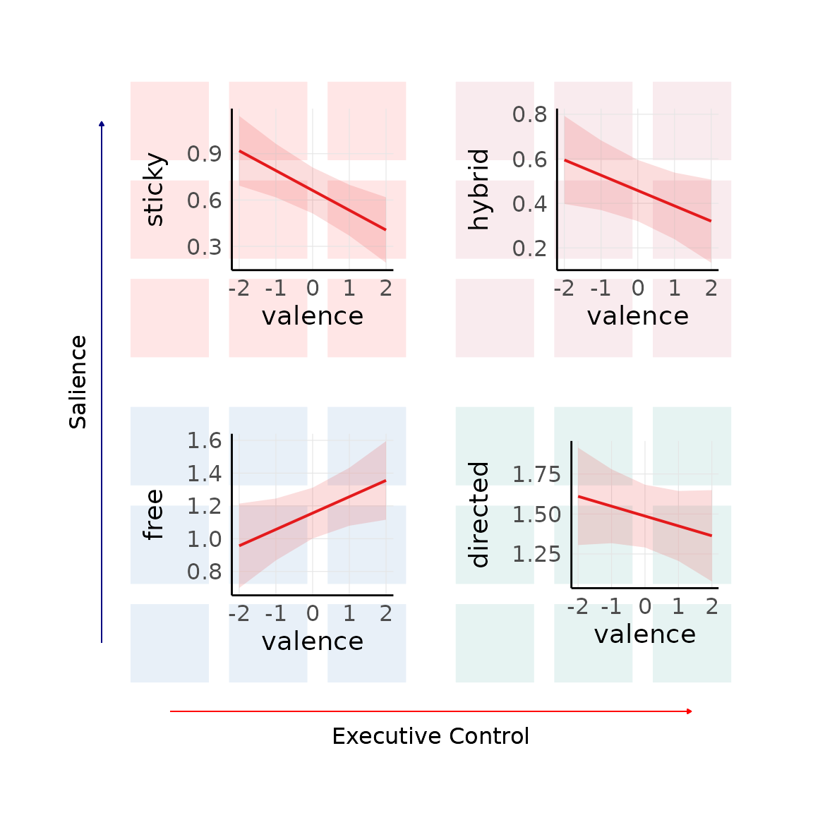
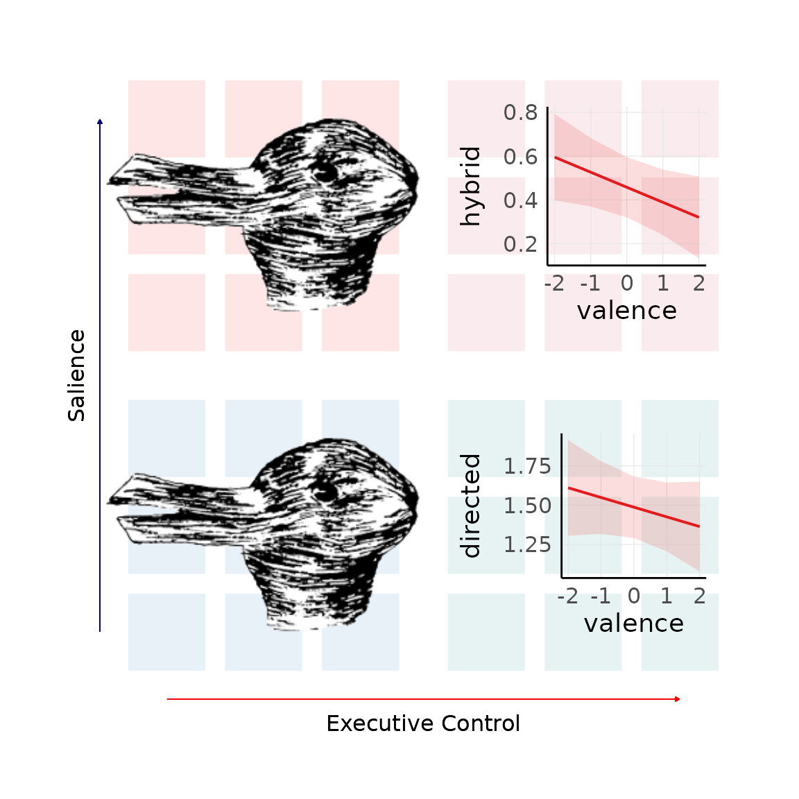

library(ThinkingGrid)
library(lme4)
#> Loading required package: Matrix
library(sjPlot)
library(png)
library(grid)
data_file <- system.file("extdata", "sample_data.csv", package = "ThinkingGrid")
tg_data <- read.csv(data_file)
knitr::kable(head(tg_data))| id | condition | probe | dc | ac | valence |
|---|---|---|---|---|---|
| 0 | Negative | 1 | 6 | 1 | -1 |
| 0 | Negative | 2 | 4 | 3 | -1 |
| 0 | Negative | 3 | 3 | 3 | 0 |
| 0 | Negative | 4 | 4 | 5 | 0 |
| 1 | Negative | 1 | 5 | 1 | -2 |
| 1 | Negative | 2 | 5 | 1 | -2 |
In case data is already collected, users can automatically add the
quadrant depths using the add_depths function. The
deliberate and automatic constraints column names must be passed to the
function and must range from one to six for it to work correctly.
tg_data <- add_depths(
tg_data,
dc = "dc",
ac = "ac"
)
knitr::kable(head(tg_data))| id | condition | probe | dc | ac | valence | total_depth | quadrant | sticky | hybrid | free | directed |
|---|---|---|---|---|---|---|---|---|---|---|---|
| 0 | Negative | 1 | 6 | 1 | -1 | 5 | 3 | 0 | 0 | 0 | 5 |
| 0 | Negative | 2 | 4 | 3 | -1 | 1 | 3 | 0 | 0 | 0 | 1 |
| 0 | Negative | 3 | 3 | 3 | 0 | 1 | 1 | 0 | 0 | 1 | 0 |
| 0 | Negative | 4 | 4 | 5 | 0 | 2 | 4 | 0 | 2 | 0 | 0 |
| 1 | Negative | 1 | 5 | 1 | -2 | 4 | 3 | 0 | 0 | 0 | 4 |
| 1 | Negative | 2 | 5 | 1 | -2 | 4 | 3 | 0 | 0 | 0 | 4 |
The depths can be used as dependent variables in statistical
analyses. The thinkgrid_quadrant_plot function provides a
convenient way to visualize each of these analyses within their
individual quadrants. Build the models and their respective ggplot2
objects similar to the example shown below.
free_model <- lmer(free ~ valence + (1|id), data = tg_data)
sticky_model <- lmer(sticky ~ valence + (1|id), data = tg_data)
directed_model <- lmer(directed ~ valence + (1|id), data = tg_data)
salience_model <- lmer(hybrid ~ valence + (1|id), data = tg_data)
free_plot <- plot_model(free_model, type = "pred")
sticky_plot <- plot_model(sticky_model, type = "pred")
directed_plot <- plot_model(directed_model, type = "pred")
salience_plot <- plot_model(salience_model, type = "pred")Once the plots are made, simply pass them to the
thinkgrid_quadrant_plot function.
combined_plot1 <- thinkgrid_quadrant_plot(
p_sticky = sticky_plot,
p_salience = salience_plot,
p_free = free_plot,
p_directed = directed_plot
)
combined_plot1
This function also accepts images as arguments, as long as they are transparent (e.g., png). Instead of passing the ggplot2 objects, the png object can be passed instead.
image_file <- system.file("extdata", "rabbiduck.png", package = "ThinkingGrid")
image <- readPNG(image_file)
image <- rasterGrob(image)
combined_plot2 <- thinkgrid_quadrant_plot(
p_sticky = image,
p_salience = salience_plot,
p_free = image,
p_directed = directed_plot
)
combined_plot2